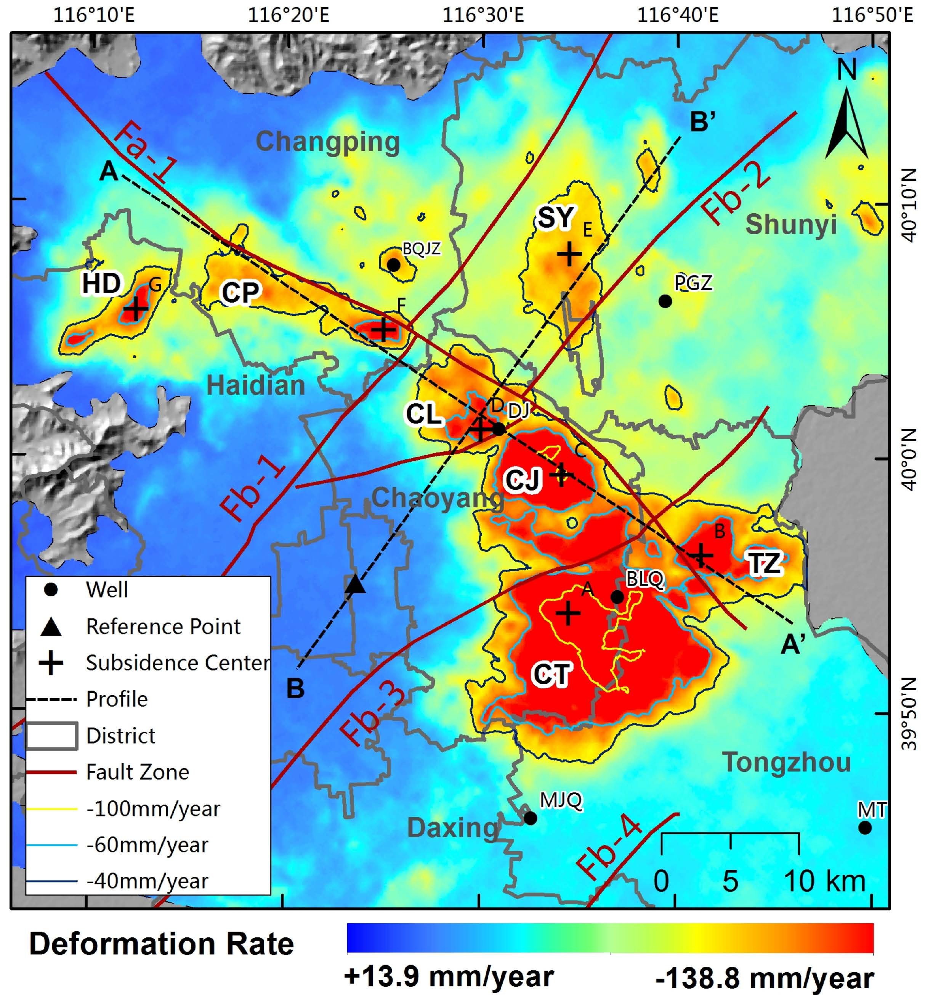
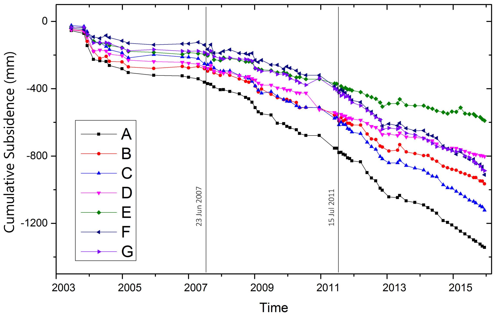
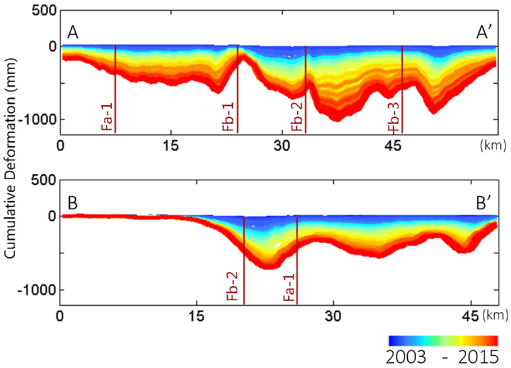
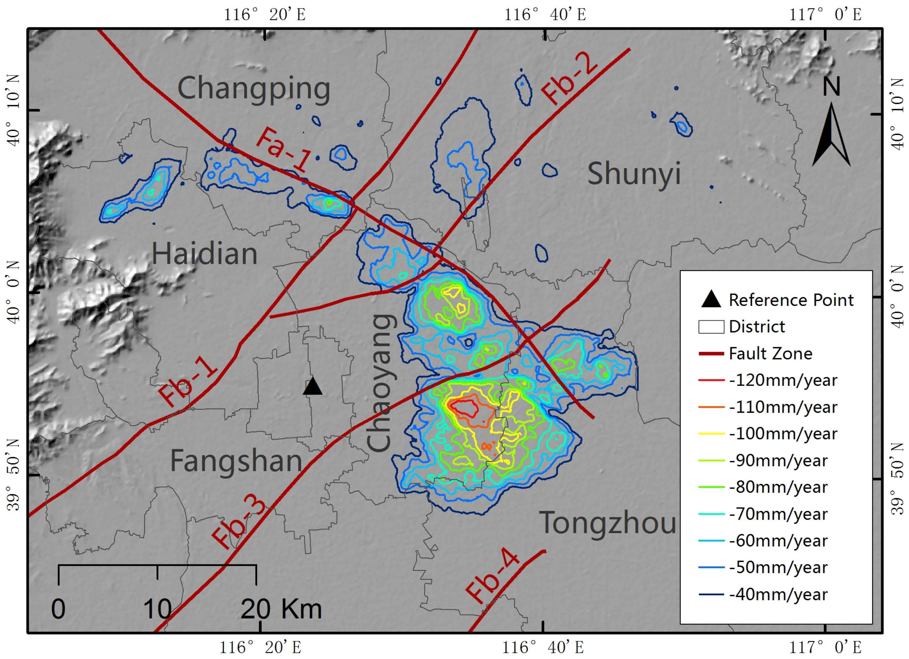
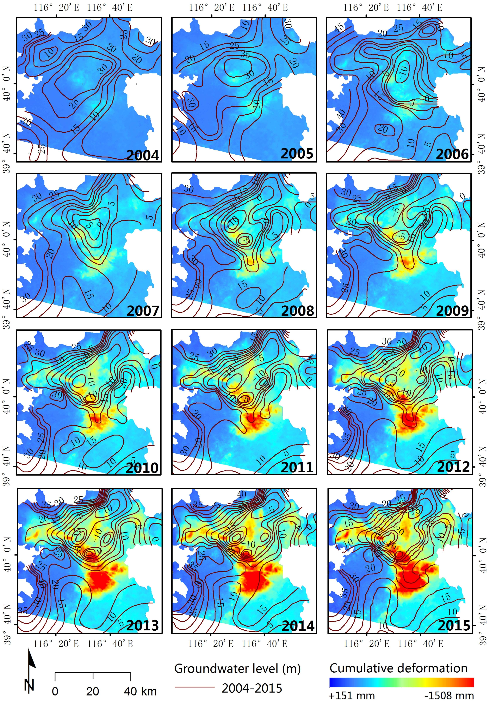
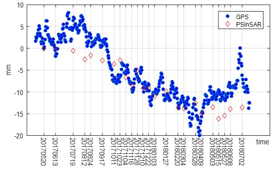
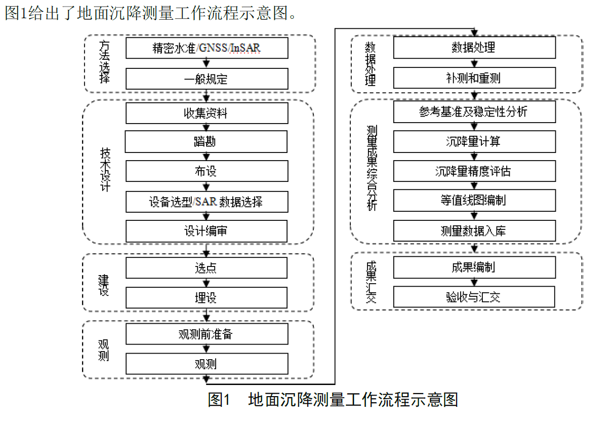

Ideas for Land Subsidence Analysis in Xuzhou
Intro
Ideas collected from articles about land subsidence analysis.
Spatiotemporal Evolution of Subsidence Bowls
The mean deformation rate map was produced from the time-series data of PS points during the study period (2003–2015). It is clear that the main land subsidence region is located in the East and north parts of the Beijing Plain (Haidian and Tongzhou district). The deformation rate ranges from 138.8 to +13.9 mm/year. This serious land subsidence with a rapid rate and a wide range of values has been observed in previous studies1.
As there is a clear distinction across the -40 mm/year deformation line in the map, we used the -40 mm/year deformation line as a boundary of the subsidence regions. Combining with the -60 mm/year deformation line, we found there are mainly seven subsidence bowls in the Beijing Plain:

In order to analyze the development of the subsidence bowls, points (A–G) located almost in the central part of each of the main seven subsidence bowls, were selected for time series analysis of the deformation.
The largest subsidence (more than 100 mm/year) occurred in the central part of the CT subsidence bowl, near point A. Similarly, the land subsidence velocities of TZ (point B) and CJ (point C) subsidence bowls were more than 80 mm/year. A notable feature of Figure 7 is that the year of 2007 was a clear turning point, before which the cumulative subsidence of all points (A–G) was mostly stable following an initial period of subsidence in early 2004. In contrast, the cumulative subsidence increased rapidly after the year of 2007. The other important turning point is the year 2012, when the subsidence speed of D and E slowed down relative to the other subsidence bowls, resulting in lower overall subsidence compared to the other bowls by the end of 2015, and the cumulative subsidence of the two bowls was smaller than the other bowls in the end of 2015.

We examined deformation profiles through time in the northwest–southeast (AA’) and southwest–northeast (BB’) directions. The cumulative deformation of the profiles are shown in Figure 8 from 2003 to 2015. Profile AA’ which is almost along Nankou–Sunhe fault across subsidence bowls CP, CL, CJ and TZ. It is apparent that Fb-1 is located between CP and CL, Fb-2 is located between CL and CJ, and Fb-3 is located between CJ and TZ, which means that the subsidence area is divided into regions along the northwest–southeast direction. From the profile BB’ we can see that there was almost no subsidence in the left part (i.e., southwest), but there was large subsidence (about 500 mm from 2003 to 2015) in the right part (i.e., northeast). We can conclude that there are generally two parts (stable and subsidence areas) along the southwest–northeast direction.

From the GIS spatial analysis, we discovered that the most serious part of land subsidence in the Beijing Plain is located in the east part of Chaoyang district, a 26.51 km^2 region with a subsidence rate of more than 100 mm/year. The area of subsidence rate with more than 40 mm/year is 536.06 km^2 large.

Combining ground water level contours from 2003 to 2015 and the cumulative deformation extracted by PSI during the period, the correlation between subsidence response patterns and phreatic groundwater flow field was analyzed comprehensively (Figure 12). A comparison of 2015 groundwater levels with 2004 levels shows water level declines of 15–30 m throughout the north plain, with a 50 m maximum decline occurring in the central part of the Beijing Plain.

Verfy with GPS time series
To better verify the accuracy of the monitoring results through PSInSAR analysis, we have compared the estimated results with GPS measurements from the nearby station in Beijing. Using the observed result in 20170520 as the common reference, both GPS and PS time series are displayed in Fig 8. And we can see that the PS deformation results are in well agreement with GPS time series, which confirms the validity of above processing method2.


本博客所有文章除特别声明外，均采用 CC BY-SA 4.0 协议 ，转载请注明出处！